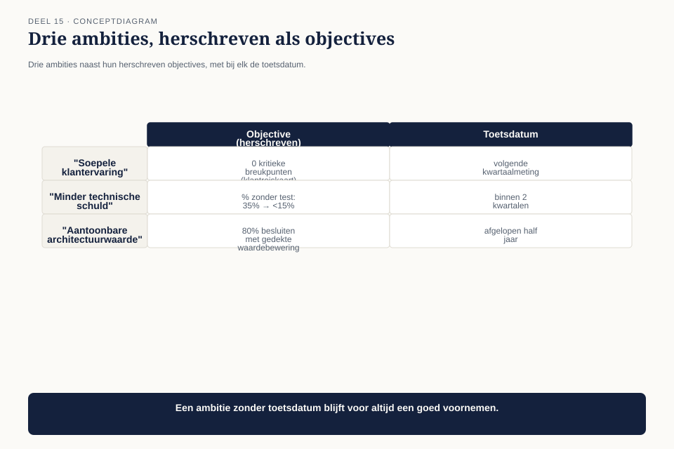

Deel 15 — Value model I
Niveau 2 — Engagement, waarde en specialisatie | Deelnemersreader BTABoK-cursus, Ductus — twee dagdelen
15.1 Waar dit deel over gaat
Dit is het eerste deel in de cursus dat twee dagdelen beslaat, en dat is met opzet: het value model is waar de BoK zich het scherpst onderscheidt van andere architectuurframeworks, en het is waar alles wat je tot nu toe hebt geleerd — het verdienmodelblad, het waarderingsblad, de vier investeringstypen, het kwaliteitsprofiel — samenkomt tot één doorlopende praktijk in plaats van losse instrumenten.
De vraag die dit deel beantwoordt is niet nieuw, maar wordt hier voor het eerst op programmaniveau gesteld: wat heeft architectuur dit programma tot nu toe daadwerkelijk opgeleverd, in de eenheid die het bestuur begrijpt?
Aan het eind van dit deel kun je:
- objectives van een programma herleiden tot toetsbare doelen, niet ambities;
- een waardestroom in kaart brengen van trigger tot geleverde waarde, met frictiepunten gemarkeerd;
- een batenrealisatieplan opstellen dat beloftes over tijd toetst, niet alleen op het moment van besluit;
- de Architect Value-benadering — de synthese van deel 2, 3 en dit deel — toepassen op een compleet programma.
15.2 De vraag van de stuurgroep
Mutatieplatform is halverwege. De stuurgroep — waarin Bart Hoekstra, inmiddels CTO van Meridiaan, een vaste stem heeft — stelt een vraag die niemand in het programma scherp kan beantwoorden: “We zijn zeven maanden onderweg en hebben drie architecten fulltime op dit programma. Wat heeft dat opgeleverd, in euro’s of in aantoonbaar risico dat niet is opgetreden?”

Er zijn losse antwoorden — het koppelvlakpatroon uit deel 2, de kwaliteitsprofielen uit deel 8, de klantreiskaart uit deel 12 — maar niemand heeft ze ooit bij elkaar opgeteld tot één verhaal. Dat is precies waar dit deel voor is.
15.3 Objectives: van ambitie naar toetsbaar doel
De BoK plaatst objectives als eerste competentie van het value model, en het onderscheid met een gewone ambitie is scherp: een objective is toetsbaar op een vastgesteld moment, een ambitie is dat niet.

| Ambitie | Objective |
|---|---|
| “We willen een soepele klantervaring” | Nul kritieke breukpunten in de klantreiskaart bij de volgende kwartaalmeting (deel 12) |
| “We willen minder technische schuld” | Het percentage wijzigingen zonder geautomatiseerde test daalt van 35% naar onder 15% binnen twee kwartalen (deel 14) |
| “We willen aantoonbare architectuurwaarde” | Voor tachtig procent van de architectuurbesluiten van het afgelopen half jaar is een gedekte waardebewering te reconstrueren uit het besluitenlogboek |
Merk op dat elke objective teruggrijpt op een instrument dat al bestaat — de klantreiskaart, de metriek uit deel 14, het besluitenlogboek. Dit deel voegt geen nieuwe meetinstrumenten toe; het verbindt de bestaande instrumenten aan een toetsbaar doel met een datum.
15.4 De waardestroom
De tweede competentie — value streams — is het instrument waarmee je architectuurwerk zichtbaar maakt in de keten die de deelnemer daadwerkelijk ervaart, in plaats van in de organisatiestructuur die het bouwt.

Een waardestroom is niet hetzelfde als de klantreiskaart uit deel 12. De klantreiskaart toont de ervaring; de waardestroom toont de tijd en moeite die tussen elke stap zit — inclusief de stappen die niemand ziet, zoals interne verwerking, wachttijd tussen systemen, en handmatige controles.
| Stap | Doorlooptijd | Wachttijd erna |
|---|---|---|
| Deelnemer krijgt signaal (leeftijd bereikt) | automatisch | 0 |
| Deelnemer raadpleegt simulatie | enkele minuten | tot 3 dagen (deelnemer neemt de tijd) |
| Deelnemer maakt keuze | variabel | tot 5 werkdagen (verwerkingsachterstand) |
| Interne verwerking keuze | 2 werkdagen | tot 10 werkdagen (handmatige controle) |
| Eerste uitkering | automatisch | — |
Het inzicht dat een waardestroom oplevert: de meeste tijd zit niet in het werk zelf maar in de wachttijd ertussen. Van de totale doorlooptijd van de keten is minder dan twintig procent daadwerkelijk verwerkingstijd — de rest is wachten tussen stappen. Dat verandert waar architectuurwerk het meeste oplevert: niet het versnellen van de interne verwerking (2 werkdagen), maar het wegnemen van de handmatige controle die tot 10 werkdagen wachttijd veroorzaakt.
Verband met deel 3. Dit is dezelfde discipline als het waarderingsblad — een bewering onderbouwen met een cijfer — nu toegepast op een keten in plaats van op één investering. De handmatige controle is precies het soort verborgen kostenpost die het waarderingsblad in deel 3 leerde opsporen.
15.5 Batenrealisatie: beloftes over tijd toetsen
De derde competentie is waar de meeste architectuurpraktijken tekortschieten, en waar dit deel het scherpst van niveau 1 verschilt. Het waarderingsblad uit deel 3 maakte een schatting vóór een besluit. Batenrealisatie toetst ná het besluit of de belofte is uitgekomen — en dat gebeurt in de praktijk vrijwel nooit.

Het instrument: het batenrealisatieplan. Voor elke belangrijke architectuurinvestering:
| Veld | Inhoud |
|---|---|
| Belofte | de geschatte baten uit het waarderingsblad, met de bandbreedte |
| Meetmoment 1, 2, 3 | vaste tijdstippen na oplevering (bijvoorbeeld na 1, 3 en 6 maanden) |
| Werkelijke uitkomst per meetmoment | het daadwerkelijk gemeten resultaat |
| Verklaring bij afwijking | als de belofte niet is uitgekomen: waarom niet, en wat leert dat |
Toegepast op het koppelvlakbesluit uit niveau 1 (deel 2-3): de belofte was 18.000 tot 45.000 euro aan bespaard herstelwerk per jaar. Bij de eerste meting, drie maanden na de reparatie, blijkt het herstelwerk inderdaad tot nul te zijn gedaald — een bevestigde belofte, met een concreet cijfer in plaats van een aanname die nooit is getoetst.
Waarom dit zelden gebeurt. Een waardering vóór een besluit voelt als verplicht — je moet het besluit verdedigen. Een toetsing áchteraf voelt vrijblijvend, want het besluit is al genomen. Dat is precies de reden dat batenrealisatie zo zelden gebeurt, en precies de reden dat het de kern is van wat een architectuurpraktijk aantoonbaar maakt in plaats van beweert.
15.6 Waardemethoden: de rekenkunde achter de belofte
De vierde competentie voegt twee eenvoudige rekenmethoden toe aan het instrumentarium van deel 3, specifiek bruikbaar op programmaniveau.
Kosten van uitstel. Wat kost het om een investering een kwartaal later te doen? Bij het koppelvlak: elk kwartaal uitstel betekent een kwartaal doorlopend herstelwerk, dus de kosten van uitstel zijn direct gelijk aan het kwartaalbedrag uit de bandbreedte van deel 3. Deze rekenmethode maakt “we doen het volgend kwartaal wel” een expliciete keuze met een prijs, in plaats van een gratis uitstel.
Cumulatieve baten versus eenmalige kosten. Een investering die eenmalig 15.000 euro kost en jaarlijks 20.000 euro bespaart, heeft een ander soort waarde dan een investering die eenmalig 15.000 euro kost en eenmalig 20.000 euro oplevert. Het eerste type — terugkerende baten — weegt zwaarder naarmate de tijdshorizon van het programma langer is, en dat onderscheid ontbreekt vaak in een businesscase die alleen naar het eerste jaar kijkt.
15.7 De Architect Value-benadering, samengevat
Wat in dit deel samenkomt, is niet nieuw — het is de optelsom van drie eerdere instrumenten, nu als doorlopende praktijk in plaats van losse toepassingen:

- Waarderen vóór het besluit (deel 3): basislijn, bandbreedte, wat de onzekerheid zou wegnemen.
- Uitvoeren met een expliciet type (deel 3): renderend, beschermend, verplicht, of optiescheppend — elk met zijn eigen waarderingslogica.
- Meten ná oplevering (dit deel): het batenrealisatieplan, op vaste meetmomenten.
- Terugkoppelen naar de volgende waardering: elke afwijking tussen belofte en werkelijkheid maakt de volgende schatting scherper.
Dat vierde punt is waar een architectuurpraktijk volwassen wordt: niet door perfecte voorspellingen te doen, maar door een leercyclus te hebben die elke volgende voorspelling beter maakt dan de vorige.
15.8 Het antwoord aan de stuurgroep
Claudette en haar twee collega-architecten stellen het antwoord samen uit vijf batenrealisatieplannen van het afgelopen half jaar, plus de waardestroomanalyse die laat zien waar de komende investeringen het meeste opleveren. Het antwoord aan de stuurgroep is geen vaag verhaal over kwaliteit en risico, maar een tabel: vijf investeringen, vijf beloftes, vijf gemeten uitkomsten, met een totale bevestigde besparing die het architectuurbudget van zeven maanden ruim overtreft.
Twee van de vijf beloftes zijn niet volledig uitgekomen — en dat wordt niet verzwegen. Bij één ervan blijkt de verklaring waardevol: de belofte ging uit van een aanname die niet klopte, en die correctie wordt meegenomen in de volgende waardering. Dat is precies de leercyclus uit 15.7 in actie, en het maakt het antwoord aan de stuurgroep geloofwaardiger dan een verslag waarin alles perfect uitkwam.
15.9 Kernbegrippen
| Begrip | Betekenis in deze cursus |
|---|---|
| Objective | een toetsbaar doel met een datum, in tegenstelling tot een ambitie |
| Waardestroom | de keten van trigger tot geleverde waarde, met doorlooptijd én wachttijd tussen stappen |
| Batenrealisatieplan | belofte plus meetmomenten ná oplevering, met verklaring bij afwijking |
| Kosten van uitstel | wat het kost om een investering later te doen — maakt uitstel een expliciete, geprijsde keuze |
| De Architect Value-benadering | de cyclus waarderen → uitvoeren → meten → terugkoppelen, die elke volgende waardering scherper maakt |
Volgende deel: deel 16 — Value model II. Technische schuld als financieel begrip, en de dekkingsgraad van de architectuurpraktijk zelf.